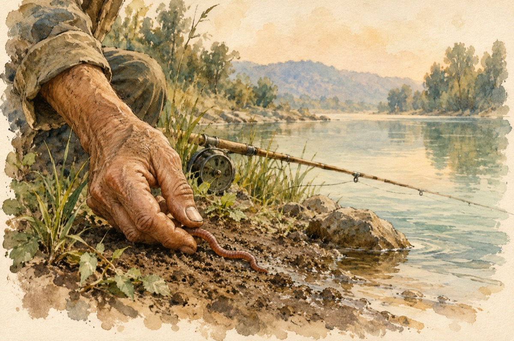

La pescuit
Și totuși nu-ți pierde răbdarea
Ce-i al tău e pus deoparte
Fie râul cât de mic, fie cât de mare marea
Malu-i cel ce te desparte
Ca să ai de noroc parte!
Pune râma în cârlig
Chiar de apa este rece
Tu te-alegi cu un câștig
Râma cu-n pește petrece!
Ea îi face din codiță
El înghite apa-n sec
Se agață-n undiță
De-aici marele eșec!
Pescarul face dreptate
Ia peștele din cârlig
Lasă râma-n libertate
Și rămâne în câștig!...
Vasile Groza